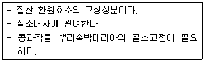
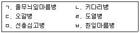

종자기사 (2011-03-20 기출문제)
1과목: 종자생산학
1. 종자생산지대로서 가장 적합한 곳은?
- 강우가 많은 지역
- 동일작물 재배 단지
- 교잡의 우려가 적은 지역
- 바람이 항상 있는 지역
(정답률: 87%)

2. 자가수분을 원칙으로 하여 자식성 작물로 분류되나 때론 타가수분이 이루어져 자연 교잡률이 높은 작물로 분류되는 것은?
- 땅콩, 피망, 잣
- 땅콩, 토마토, 가지
- 피망, 갓, 수수
- 토마토, 가지, 수수
(정답률: 46%)
3. 종자증식에서 포장검사의 주된 목적은?
- 유전적 순도검사
- 포장 청결 검사
- 잡초 발생 검사
- 비배관리 점검
(정답률: 90%)
4. 배추과(十字花科) 작물의 화아 분화 후 보이는 현상은?
- 엽수증가
- 근부비대
- 추대(抽臺)
- 결구(結球)
(정답률: 67%)
5. 감자의 원원종 생산방법에 대한 설명설명 틀린 것은?
- 순도와 품질유지를 위해 괴경단위 재식을 한다.
- 조직배양에서 유래한 기본식물을 종서로 사용한다.
- 이병주 제거와 바이러스 감염방지를 위한 약제 살포를 철저히 한다.
- 10a 당 재식수주는 망실재배 35,000주, 포장재배 38,000주로 한다.
(정답률: 54%)
6. 안정저장을 위한 시금치 종자의 최대수분함량의 한계로 가장 적합한 것은?
- 4.0%
- 6.5%
- 8.0%
- 12.3%
(정답률: 42%)
7. 국내에 등록된 주요 종자 소독약은?
- 클로락스
- 테트라디폰 유제
- 베노밀티람수화제
- 에테폰
(정답률: 69%)
8. 자연상태에서 상대적으로 저장력이 가장 약한 종자는?
- 벼
- 수박
- 밀
- 땅콩
(정답률: 54%)
9. 종자의 발아촉진처리에 대한 설명으로 틀린 것은?
- 프리라이밍처리는 불량환경에서 종자의 발아율과 발아의 균일성을 높일 목적으로 실시한다.
- 유체파종(fluid drilling)은 겔 상태의 용액 내에 발아종자를 넣어두고 특수기계를 이용하여 이 겔을 파종하는 방법이다.
- 전발아된 종자(pregerminated seed)는 발아가 시작된 종자를 건조시키면 다시 발아되지 않는다는 원리를 이용한 방법이다.
- 종자 프리라이밍 처리에 사용하는 고삼투액에는 PEG나 무기염류가 있다.
(정답률: 52%)
10. 종자의 발아촉진이나 후면타파에 이용 않는 것은?
- 옥신(auxin)
- 티오요소(thiourea)
- 지베릴린(gibberellic acid)
- 질산칼륨(potassium nitrate)
(정답률: 30%)
11. 종자의 유전적 퇴화방지법이 아닌 것은?
- 자연교잡의 억제
- 생육기의 조절
- 이종종자의 혼입방지
- 이형주의 철저한 도태
(정답률: 74%)
12. 종자 저장에 관한 설명으로 가장 옳은 것은?
- 종자 자체 내 습도 수준은 공기 중 상대습도의 영향을 받지 않는다.
- 종자수분함량과 종자수명은 정의 상관관계를 갖는다.
- 산소 공습이 충분해야 한다.
- 일반적인 종자저장 조건은 저온 건조이다.
(정답률: 70%)
13. 볍씨 파종 전 비중에 의한 선별 작업시 까락이 없는 메벼의 표준비중으로 가장 적합한 것은?
- 1.03
- 1.08
- 1.10
- 1.13
(정답률: 43%)
14. 저위도 지방이 원산인 식물의 일반적 특징이 아닌 것은?
- 단일식물이 주로 분포한다.
- 생육적온이 높고 저온에 약하다
- 화아분화에 저온의 영향이 크지 않다.
- 장일에 의해 화아분화가 촉진된다.
(정답률: 42%)
15. 종자의 후천적 형질로만 나열된 것은?
- 충실도.건조도
- 내충성.내병성
- 건조도.내건성
- 충실도.내한성
(정답률: 49%)
16. 벼의 포장검사방법과 기중으로 틀린 것은?
- 포장검사는 유숙기로부터 호숙기 사이에 1회 실시 한다.
- 포장 검사시 1/4이상이 도복된 경우 불합격 처리된다.
- 검사규격에서 특정해초라 함은 피를 말한다.
- 원원종과 원종의 품종순도 최저한도는 각각 99.9%이다.
(정답률: 63%)
17. 식물의 종자와 과실은 각각 어떤 조직이 발달하여 형성되는가?
- 종자 : 자방, 과실 :주심
- 종자 : 주심, 과실 : 배유
- 종자 : 배유, 과실 : 배주
- 종자 : 배주, 과실 : 자방
(정답률: 63%)
18. 종자휴면의 원인에 대한 설명으로 틀린 것은?
- Coumarin은 타발휴면을 유발하는 물질의 하나이다.
- 자엽은 배 휴면에서 배 축의 생장억제작용을 한다.
- 수목 종자는 종피 휴면과 배 휴면이 동시에 일어나는 것이 많다.
- 인삼 종자의 휴면은 배의 미숙에 기인한다.
(정답률: 54%)
19. F1 채종시 웅성불임성을 이용하는 작물로만 나열된 것은?
- 양파, 고추
- 파, 수박
- 배추, 고추
- 당근, 오이
(정답률: 62%)
20. 종자수명이 짧은 단명종자로만 나열된 것은?
- 콩,양파
- 벼,고추
- 무,수박
- 옥수수,토마토
(정답률: 65%)
2과목: 식물육종학
21. 관상용 호박에서 과색의 백색종(WWYY)과 녹색종(wwyy)의 교배시 W가 Y에 대하여 상위에 있다고 한다면 백색종과 녹색종의 F2 에서의 표현형의 분리비는?(단, 백색:황색:녹색의 비로 한다)
- 1:2:9
- 3:1:8
- 6:9:1
- 12:3:1
(정답률: 66%)
22. 자연상태에서 서로 다른 게놈을 가진 종끼리 교잡되어 생긴 이질배수체 작물은?
- Brassica oleracea
- Brassica campestris
- Brassica napus
- Brassica nigra
(정답률: 45%)
23. 작물의 수량구성요소 관찰변이 중 육종상 가장 주요한 변이는?
- 방황변이
- 대립변이
- 불연속변이
- 양적변이
(정답률: 56%)
24. 농작물별 생식방법과 1대잡종의 보급종자 생산체계를 옳게 표시한 것은?
- 고추 : 완전 자가수정, 자가불화합성 이용
- 당근 : 타가수정, 웅성불임성 이용
- 수박 : 타가수정, 웅성불임성 이용
- 양파 : 자가수정, 인공교배
(정답률: 68%)
25. 인공변이 창출의 방법이 아닌 것은?
- 삽목
- 인공교배
- 방사선돌연변이
- 유전자조작을 통한 형질전환
(정답률: 74%)
26. 염색체의 수적 변이에서 일염색체성은?
- 2n
- 2n+1
- n-1
- 2n-1
(정답률: 75%)
27. 자연상태에서 일반적으로 타가수분으로 번식하는 것은?
- 호밀
- 상추
- 토마토
- 고추
(정답률: 35%)
28. 계통육종방법으로 육성된 벼의 생산력검정에 대한 설명으로 가장 적합한 것은?
- 우리나라에서 계통육종에 의해 육성된 벼품종들은 대부분 F2 ~F3 세대에서 고정계통을 선발한다.
- 산력 검정 예비시험은 시험구의 반복 없이 3년간 실시 한다.
- 산력 검정 본시험은 시험구의 반복을 두고 2~3년간 실시한다.
- 지역적응시험은 여러 지역에서 시험구의 반복 없이 1회 실시한다.
(정답률: 45%)
29. 형질전환체 식별법 중 유전자운반 플라스미드가 삽입되었는지를 배지에서 확인할 수 있는 방법은?
- 항생제 저항성 검정
- Southern blot 검정
- Northern blot 검정
- 항원항체 반응 검정
(정답률: 38%)
30. 유전자의 격리 조건 중 교잡 불친화성으로 격리가 되는 현상은?
- 지리적 격리
- 시간적 격리
- 생식적 격리
- 차단적 격리
(정답률: 58%)
31. 2개 형질간에 보이는 상관현상과 관계가 없는 것은?
- 유전력
- 유전자간의 연관
- 유전자의 다면적 발현
- 동시 선발
(정답률: 35%)
32. 자식성 작물의 단성 잡종 분리세대에서 호모개체 비율은?(단, g는 n-1이며 n은 분리세대 수)
- 1/(1-2g)
- 1/2g
- 1-1/2g
- 1+1/(2g-1)
(정답률: 30%)
33. A와 B를 교배친으로 하여 얻은 F5와 C를 교배하여 나온 세대는?
- F1
- BC1F5
- F5
- F6
(정답률: 26%)
34. 원연간 교배 후 조직배양을 통하여 종간잡종 식물을 얻는 방법으로 거리가 먼 것은?
- 배주배양
- 자방배양
- 배배양
- 화분배양
(정답률: 37%)
35. 감광성에 대한 설명으로 옳은 것은?
- 단일식물은 장일 조건에서 화아분화가 촉진된다.
- 장일식물은 단야식물이라고 할 수 있다.
- 벼의 만생종은 대부분 중성식물이다.
- 벼의 조생종은 대부분 감광성이 크다.
(정답률: 59%)
36. 종자증식단계에서 원원종포의 채종량 기준으로 가장 적합한 것은?
- 육종기관에서 생산하는 기본식물의 생산량 대비 50%가 되도록 계획한다.
- 육종기관에서 생산하는 기본식물의 생산량 대비 80%가 되도록 계획한다.
- 농가에서 실시하는 보통재배의 생산량 대비 30%가 되도록 계획한다.
- 농가에서 실시하는 보통재배의 생산량 대비 50%가 되도록 계획한다.
(정답률: 18%)
37. 잡종강세육종의 설명으로 옳은 것은?
- 복교잡종은 단교잡종에 비하여 형질이 고르다.
- 3계교잡종은 단교잡종에 비하여 채종량이 적다.
- 다계교잡종은 복교잡종보다 생산력이 높다.
- 합성품종은 우수한 몇 개의 근교계를 방임수분시켜서 얻는다.
(정답률: 31%)
38. 형질의 변이는 유전변이와 환경변이로 나뉘는데 이들을 구별할 수 있는 방법으로 가장 적당한 것은?
- 순도검정
- 후대검정
- 개체선발
- 집단선발
(정답률: 73%)
39. 양파처럼 꽃이 작은 작물에 웅성불임성을 이용하면 유리한 이유로 가장 적합한 것은?
- 인공교배를 하지 않고 쉽게 F1종자를 얻을 수 있기 때문
- 새로운 품종을 육성할 수 있기 때문
- 웅성불임이 육종에 영향을 미치지 않기 때문
- F2세대의 선발에 유리하기 때문
(정답률: 74%)
40. 생산력 검정을 위한 포장시험을 할 때 주의사항으로 틀린 것은?
- 기상환경은 작물생육에 이상적인 조건이 되도록 조절한다.
- 토양의 균일성을 유지한다.
- 반복구를 두고 신뢰도를 높이도록 한다.
- 시험 재료의 균일성을 가하도록 한다.
(정답률: 66%)
3과목: 재배원론
41. 배추밭 100m2에 질소 10kg을 40:60의 비율로 2회 나누어 요소 엽면시비하려 한다. 1회째 요소비료 소요량은?(단, 요소비료의 화학식은 (NH2)2CO 이다.)
- 약 8.6kg
- 약 13.0kg
- 약 26.1kg
- 약 39.0kg
(정답률: 34%)
42. 감자의 가을재배에서 휴면을 타파하기 위하여 사용하는 식물생장조절제는?
- 옥신
- 지베렐린
- 사이토카이닌
- 에틸렌
(정답률: 55%)
43. C3형 식물의 광합성 암반응 중 최초로 생성되는 탄소고정 산물은?
- APT
- Starch
- ADP
- PGA
(정답률: 45%)
44. 가뭄해에 대한 밭의 재배 대책이 될 수 있는 것은?
- 뿌림골을 높게 한다.
- 재식밀도를 높게 한다.
- 질소질 비료를 시용한다.
- 봄철의 보리밭이 건조할 때는 답압을 한다
(정답률: 50%)
45. 내건성이 강한 작물의 형태적 특성이 아닌 것은?
- 식물체가 작고 잎도 작다.
- 엽조직이 치밀하고, 엽맥과 울타리조직이 발달 되어 있다.
- 체적에 대한 표면적의 비가 작고 다육화의 경향이 있다.
- 뿌리가 얕고, 지하부보다 지상의 발달이 좋다.
(정답률: 66%)
46. 식물생장조절제 중 제초제로 제일 먼저 이용되었던 것은?
- B-Nine
- 2,4-D
- Phosfon-D
- MH-30
(정답률: 63%)
47. 도복지수를 계산하는데 적용되는 인자가 아닌 것은?
- 지상부 무게
- 줄기의 좌절중
- 잎의 두께
- 줄기 길이(키)
(정답률: 65%)
48. 대전법은 어떤 작부방식에 해당되는 가?
- 이동경작
- 휴한농법
- 순환농법
- 자유경작
(정답률: 35%)
49. 어린모 기계이앙 재배에서 다음 중 가장 중요한 벼품종의 특성은?
- 저온발아성
- 내건성
- 내비성
- 관수저항성
(정답률: 54%)
50. 내염성이 강하여 새로 조성한 간척지의 토양에 적응성이 높은 작물은?
- 유채
- 보리
- 고구마
- 완두
(정답률: 70%)
51. 피자식물의 종자 형성에 대한 설명으로 틀린 것은?
- 중복 수정한다.
- 배는 3n이고, 배유는 2n 이다.
- 정핵과 난세포가 결합하여 배를 형성한다.
- 정핵과 극핵이 결합하여 배유를 형성한다.
(정답률: 63%)
52. 작물의 수확 후 관리에 대한 설명으로 옳은 것은?
- 가공용 감자의 저장을 위한 최적온도는 3-4도이다.
- 고춧가루의 저장 적수분 함량은 10%이하 이다.
- 고구마의 안전저장은 온도 13-15도, RH 58-90% 이다.
- 고품질 쌀을 위한 저장 적수분 함량은 15%이하, 온도 10도이다.
(정답률: 33%)
53. 다음 설명하는 미량 원소는?

- 칼슘
- 마그네슘
- 몰리브덴
- 붕소
(정답률: 50%)
54. 다년생 작물에 속하는 것은?
- 호프
- 상추
- 메밀
- 시금치
(정답률: 54%)
55. 비료를 뿌린 위에 흙을 넣어 종자가 비료에 직접 닽지 않게 하는 작업은?
- 간토
- 복토
- 배토
- 성토
(정답률: 25%)
56. 방사성 동위원소가 방출하는 방사선 중 가장 현저한 생물적 효과를 가져 주로 이용되는 것은?
- 알파선
- 베타선
- 감마선
- 델타선
(정답률: 79%)
57. 육묘 중 상토의 EC가 높아졌을 때에 대한 설명으로 틀린 것은?
- 상토의 EC가 높아지는 원인은 관수량 부족으로 염분이 배수공을 통하여 용탈되지 못하고 상토에 집적되기 때문이다.
- 상토의 EC가 높아지면 지상부와 뿌리의 생육이 너무 왕성하여 도장하기 쉽다.
- 상토의 EC가 높아지면 잎이 진한 녹색을 띠면서 잎 가장자리가 괴사한다.
- 높아진 상토의 EC를 낮추기 위하여 시비량을 줄이거나 관개수의 양을 증가시켜 용탈시킨다.
(정답률: 48%)
58. 작물생육에 알맞은 토양의 고상 분포 비율로 가장 적합한 것은?
- 10%
- 20%
- 30%
- 50%
(정답률: 61%)
59. 일장효과에 대한 설명으로 옳은 것은?
- 일장처리에 감응하는 부위는 생장점이다.
- 유엽이나 노엽보다 성엽이 더 잘 감응한다.
- 장일식물은 질소가 많은 것이 장일효과가 더욱 잘 나타난다.
- 일장효과는 광과의 관계이므로 온도와는 전혀 무관하다.
(정답률: 37%)
60. 육묘에 이용되는 상토의 조건으로 거리가 먼 것은?
- 작물의 지지력이 커야 한다.
- 필요한 수분을 적절히 유지하여야 한다.
- 통기성보다 보수력을 높이는 것이 더 중요하다
- 작물 생육에 필요한 양분을 보유할 수 있어야 한다.
(정답률: 61%)
4과목: 식물보호학
61. 식물병의 종합적 방제에 대한 설명으로 옳은 것은?
- 한 지역에서 동시에 방제하는 방법
- 여러 가지 병을 동시에 방제하는 방법
- 여러 가지 농약을 동시에 사용하여 병을 방제하는 방법
- 여라 가지 가능한 방제수단을 사용하여 방제하는 방법
(정답률: 66%)
62. 기주특이적 독소와 이를 분비하는 병원균의 나열로 틀린 것은?
- AK-독소, 배나무 검은 무늬병균
- AM-독소, 사과나무 점무늬낙엽병균
- Victorin, 벼 카다리병균
- T-독소, 옥수수 깨씨무늬병
(정답률: 62%)
63. 배나무 붉은별무늬병균의 중간 기주는?
- 향나무
- 참나무
- 매자나무
- 송이풀
(정답률: 55%)
64. 담배나방의 생태를 바르게 설명한 것은?
- 성충으로 월동한다.
- 과실해충이다.
- 흡즙성해충이다.
- 식균성해충이다.
(정답률: 29%)
65. 작물 재배시 잡초의 피해에 관한 설명으로 틀린 것은?
- 경합의 해
- 상호대립억제작용
- 병해충 매개
- 침식 초래
(정답률: 60%)
66. 농약 흡입중독시 처치 방법으로 가장 거리가 먼 것은?
- 옷을 벗겨 체온을 낮춘다.
- 편안한 자세로 안정시킨다.
- 공기가 신선한 곳으로 올라간다.
- 호흡이 약하면 인공호흡을 한다.
(정답률: 65%)
67. 제초제의 선택성 중 작물과 잡초간의 연령 차이와 공간적 차이에 이해 잡초만을 방제하는 유형은?
- 생리적 선택성
- 생화학적 선택성
- 형태적 선택성
- 생태적 선택성
(정답률: 43%)
68. 파리목의 특징에 해당하는 것은?
- 날개가 1쌍이다.
- 씹는 입틀을 갖고 있다.
- 날개가 비늘로 덮여있다.
- 몸이 좌우로 납작하다.
(정답률: 50%)
69. 잡초 종자의 휴면타파를 위한 방법으로 가장 거리가 먼 것은?
- 고농도의 황산에 잠깐 침지한다.
- 종자의 배에 침으로 상처를 낸다.
- 30도에서 며칠간 처리한다.
- 저온과 고온을 번갈아 가면서 부여한다.
(정답률: 24%)
70. 농약 저항성의 관리 방법으로 틀린 것은?
- 대상 병해충의 저항성 개체군의 증가를 억제하여 약제의 효과를 극대화한다.
- 잔효성이 짧은 선택적 약제를 사용한다.
- 약제의 과잉사용과 동일계 약제의 연속 시용을 피한다.
- 제초 활성의 시기가 서로 다르거나 작용성이 상호 길항적인 약제를 혼합제로 사용한다.
(정답률: 37%)
71. 식물 종자에서 월동하지 않는 것은?
- 벼 도열병균
- 벼 키다리병균
- 벼 깨씨무늬병균
- 벼 잎집얼룩병균
(정답률: 44%)
72. 잡초의 생태적 방제법 중 작물의 경합력 증신을 위한 재배조처로 경합특성이용법에 해당하는 것은?
- 윤작, 재식밀도
- 피복, 예취
- 시비, 열처리
- 경운, 침수처리
(정답률: 57%)
73. 비생물성 원인에 의한 병의 특징은?
- 기생성
- 비전염성
- 표징 형성
- 병원체 증식
(정답률: 62%)
74. 유충이 벼 잎을 끌어 철하여 숨어 있다가 해진 후에 나와 벼 잎을 가해하는 해충은?
- 벼잎말이명나방
- 이화명나방
- 벼애나방
- 줄점팔랑나비
(정답률: 15%)
75. 감염된 식물의 광합성량 변화에 직접적인 영향을 주는 병은?
- 궤양병
- 점무늬병
- 꽃썩음병
- 가지마름병
(정답률: 46%)
76. 병, 해충 및 각종 재해 요인이 작물에 직접적으로 끼치는 피해가 아닌 것은?
- 농촌 노동력 부족에 의한 농지 활용도 감소
- 병해충에 의한 작물 수확량 감소
- 식물병에 의한 농산물 품질 저하
- 저장 중 해충에 의한 상품가치저하
(정답률: 73%)
77. 다음 중 1년에 가장 많은 세대를 가지는 해충은?
- 애멸구
- 목화진딧물
- 복숭아심식나방
- 쌀바구미
(정답률: 46%)
78. 농약의 과용으로 생기는 부작용으로 관계없는 사항은?
- 약제 저항성 해충의 출현
- 잔류독에 의한 환경오염
- 생물상의 다양화
- 자연계의 평형파괴
(정답률: 68%)
79. 유기인제가 아닌 것은?
- 클로르피리포스메틸 유제
- 트리클로르폰 수화제
- 감마사이할로트린 캡슐현탁제
- 파라티온에틸 액제
(정답률: 59%)
80. 우리나라 제주도 귤나무에 피해가 많았으며, 두꺼운 밀랍으로 덮여있어 약제방제효과를 얻기 어려웠던 해충은?
- 루비깍지벌레
- 귤굴나방
- 담배거세미나방
- 귤응애
(정답률: 68%)
5과목: 종자관련법규
81. 보증종자 사후관리시험에서 정한 종자전염병의 검사방법에 대한 설명으로 옳은 것은?
- 포장상태에서 식물체의 감염여부를 조사하여 종자에 의한 전염병 감염 여부를 조사
- 파종 전에 종자가 병해충에 감염되어있는지를 조사
- 파종 후의 발아상태를 확인하여, 발아율이 낮거나 변형 된 식물체의 출현이 종자의 전염병 감염에서 비롯된 것인지를 조사
- 작물의 수확량이 기준에 미달한 원인이 종자의 전염병 감염에서 비롯된 것인지를 조사
(정답률: 22%)
82. 종자관리사의 자격기준에 맞지 않는 것은?
- 종자기술사 자격을 취득한 자
- 국리농산물품질관리원에서 1년 이상 종사한 종자기사 자격을 취득한 자
- 국립종자원에서 2년 이상 종사한 종자산업기사 자격을 취득한 자
- 종묘 생산 업무에서 2년 이상 종사한 원예기능사 자격을 취득한 자
(정답률: 73%)
83. 종자산업법에 의하여 보호품종을 실시하고자 하는 자가 농림수산식품부장관에게 통상실시권 설정의 재정을 청구할 수 있는 사유가 아닌 것은?
- 보호품종이 천재지변 그 밖의 불가항력 또는 대통령령으로 정하는 정당한 사유 없이 계속하여 3년 이상 국내에서 실시되고 있지 아니한 경우
- 보호품종이 정당한 사유 없이 계속하여 2년 이상 국내에서 상당한 영업적 규모로 실시되지 아니하거나 적당한 정도와 조건으로 국내수요를 충족시키지 못하는 경우
- 전쟁, 천재지변 또는 재해로 인하여 긴급한 수급조절이나 보급이 필요하여 비상업적으로 보호품종을 실시할 필요성이 있는 경우
- 사법적 절차 또는 행정적 절차에 의하여 불공정한 거래 행위로 인정된 사항을 시정하기 위하여 보호품종을 실시할 필요성이 있는 경우
(정답률: 34%)
84. 보증의 유효기간은 보증종자의 포장일부터 기산하며 작물별 유효기간이 2년에 해당하는 것은?
- 감자
- 배추씨
- 느타리 종균
- 목초 종자
(정답률: 57%)
85. 다음 중 보증의 효력이 있는 경우에 해당하는 것은?
- 종자의 포장에서 보증표시를 하지 아니한 경우
- 보증의 유효기간이 지난 경우
- 포장한 보증종자의 포장을 개장한 경우
- 보증한 종자포장에 보증표시와 함께 품질표시를 한 경우
(정답률: 60%)
86. 배추 2품종, 사과 1품종에 대해 품종보호 출원을 하였다. 이때 총 품종보호출원수수료는 총 얼마인가?
- 5만 5천원
- 6만원
- 11만 4천원
- 15만원
(정답률: 47%)
87. 국내에 처음으로 수입되는 작물은 수입적응성시험을 받아 농림수산식품부령이 정하는 심사기준에 미달한 때에는 국내유통을 제한 할 수 있는데, 다음 작물 중 종자 수입시 수입적응성시험을 받지 않아도 되는 품목은?
- 황기
- 장미
- 생강
- 양송이
(정답률: 67%)
88. 품종보호출원 공개시 공보에 개재할 사항이 아닌 것은?
- 출원품종의 특성
- 출원공개번호 및 출원공개연월일
- 출원품종이 속하는 작물의 학명 및 일반명
- 출원품종의 양친 특성
(정답률: 70%)
89. 종자산업법에서 1년이하의 징역에 해당하는 위반 행위로 맞는 것은?
- 보호품종 외의 타인의 품종의 품종명칭을 도용하여 종자를 보급한 자
- 유통종자의 품질표시를 하지 아니하고 종자를 판매한 자
- 품종보호권, 전용실시권 또는 질권의 상속, 그 밖의 일반승계의 취지를 신고하지 아니한 자
- 품종명칭 등록원부에 등록되지 아니한 품종명칭을 사용하여 종자를 보급한 자
(정답률: 38%)
90. 다음 중 품종목록 등재의 취소사유가 아닌 것은?
- 품종의 성능이 품종성능의 심사기준에 미달된 때
- 해당 품종의 재배로 이하여 환경에 위해가 발생할 우려가 있을 때
- 거짓이나 그 밖의 부정한 방법으로 품종목록 등재를 받은 때
- 동일 품종이 둘 이상의 품종명칭으로 중복하여 등재된 때 먼저 등재된 품종
(정답률: 69%)
91. 벼 종자를 2011년 6월 1일 품종목록에 등재되었다. 유효기간은?
- 2016년 6월 1일
- 2021년 12월 31일
- 2026년 6월 1일
- 2031년 12월 31일
(정답률: 60%)
92. 벼의 포장검사 규격 중 특정병에 속하는 것을 보기에서 모두 고른 것은?

- ㄱ,ㄴ
- ㄴ,ㅁ
- ㄷ,ㄹ
- ㅁ,ㅂ
(정답률: 48%)
93. 심사관이 품종보호 출원에 대해 거절할 수 있는 사유로 맞지 않는 것은?
- 국가품종목록에 등재되지 않은 품종의 출원
- 무권리자가 출원한 경우
- 조약에 위반된 경우
- 품종보호를 받을 수 있는 권리가 공유인 경우에 공유자 모두가 공동으로 품종보호 출원을 하지 않은 경우
(정답률: 47%)
94. 다음 중 품종의 생사, 수입 판매 신고를 하고자 할 때 품종 생산,, 수입판매신고서와 함께 제출하여야 하는 요건으로 맞는 것은?(단, 영양체 종자 및 수산식물인 경우와 수입적응성시험 대상작물, 대리인, 유전자 변형품종의 예외 경우는 제외한다)
- 신고품종의 종자만을 첨부하여 신고하여야 한다.
- 신고품종의 사진이 수록된 카탈로그를 첨부하여 신고 하면 된다.
- 신고품종의 특성표를 반드시 첨부하여야 한다.
- 신고품종의 종자시료와 신고품종의 사진을 첨부하여 신고하여야 한다.
(정답률: 58%)
95. 다음 중 국가품종몰록등재 대상 작물에 해당되는 것은?
- 콩
- 밀
- 팥
- 귀리
(정답률: 64%)
96. 다음 중 반드시 국가보증을 받아야 하는 경우가 아닌 것은?
- 농림수산식품부장관이 벼 종자를 생산하는 경우
- 농촌진흥청장이 콩 종자를 생산하는 경우
- 농업협동조합이 감자 종자를 생산하는 경우
- 종자업자가 밀 종자를 수출하는 경우
(정답률: 59%)
97. 품종 보호의 요건에 해당하지 않는 것은?
- 신규성
- 균일성
- 규명성
- 안정성
(정답률: 76%)
98. 국규품종보호권의 처분은 일반경쟁입창의 방법에 의하도록 규정하고 있다. 단, 예외적으로 수의계약의 방법에 의하여 처분할 수도 있는데 다음 중 수의계약의 사유로 옳지 않은 것은?
- 1회 유찰된 때
- 정용실시권의 설정을 받은 자에게 그 국유품종보호권을 양도한 때
- 전용실시권의 설정기간이 만료된 후 그 실시료를 이상 하여 재계약하는 때
- 국유품종보호권의 실시하는 데에 특정인의 기술이나 설비가 필요하여 일반경쟁입찰에 부칠 수 없을 때
(정답률: 37%)
99. 종자산업법의 목적으로 부적합한 것은?(오류 신고가 접수된 문제입니다. 반드시 정답과 해설을 확인하시기 바랍니다.)
- 주요작물의 품종성능의 관리
- 신품종에 대한 육성자의 권리 보호
- 종자의 생산, 보증 등에 관한 사항을 규정
- 주요 농작물 종자법과 종묘관리법의 이원화
(정답률: 55%)
100. 품종보호심판위원회의 심판에 관한 설명으로 맞는 것은?
- 3인의 심판위원으로 구성되는 합의체라 행한다.
- 삼판의 합의는 반드시 공개하여야 한다.
- 심판위원회 위원장이 행한다.
- 심판위원회 위원장과 1명의 상임위원이 행한다.
(정답률: 50%)